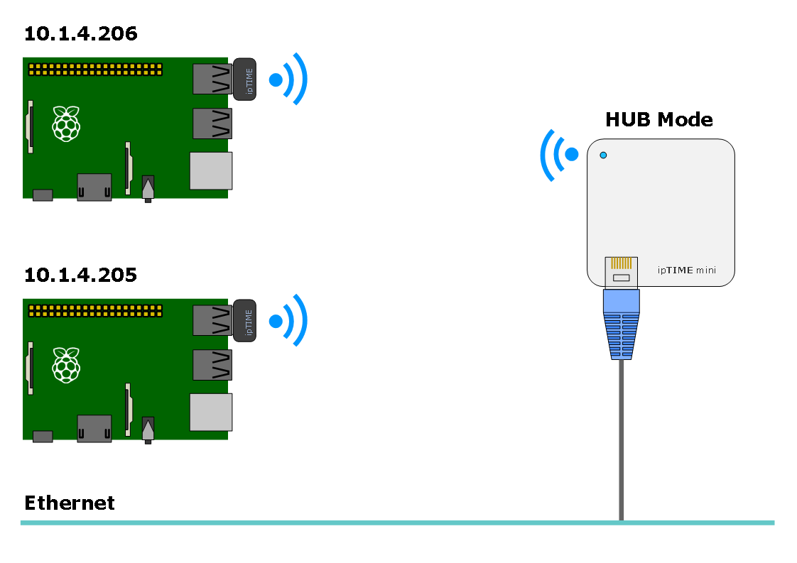
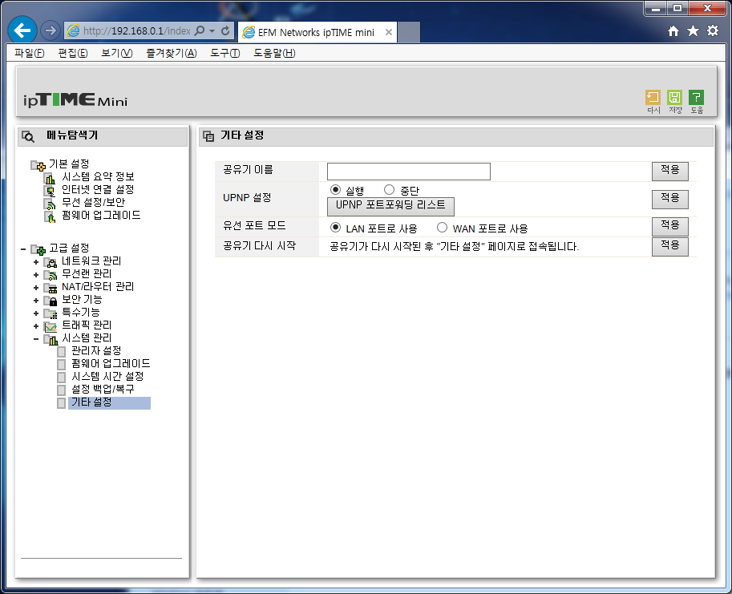

Raspberry Pi를 무선 네트워크로 구성하기 위해 다음 하드웨어를 사용하였다.
최종 목적은 다음과 같이 Raspberry Pi에 설정 된 고정 IP를 무선 공유기를 이용하여 내부 네트워크 망에 연결하는 것이다.
공유기 설정을 위해 192.168.0.1로 접속한다.
참고로 공유기 설정 모드로 들어가기 위해서는 공유기로 부터 자동으로 IP를 할당 받아야 접속이 가능하다. 자동으로 IP를 받기 위해서는 랜카드의 IP를 DHCP로 설정하면 된다.
무선 보안 설정을 위해 고급설정 - 무선랜 관리 - 무선 설정/보안 메뉴로 들어간 후 다음과 같이 설정한다.
이제 공유기를 허브 모드로 바꾸기 위해 고급설정 - 시스템 관리 - 기타 설정 메뉴로 들어간 후 유선 포트 모드를 LAN포트로 변경한다.
무선 공유기를 허브 모드로 바꾸면 IP할당이 자동으로 이루어 지지 않으므로 추후 설정 메뉴로 접속하기 위해서는 IP주소를 다음과 같이 설정 하면 된다.
공유기 설정이 끝났으면 Raspberry Pi에 접속한 후 /etc/network/interfaces 파일을 열어 다음과 같이 변경한다.
scwook@scwook:~$ ssh pi@10.1.4.206 pi@raspberrypi~$ sudo nano /etc/network/interfaces
auto lo iface lo inet loopback iface eth0 inet dhcp allow-hotplug wlan0 iface wlan0 inet static address 10.1.4.206 netmask 255.255.255.0 network 10.1.4.0 broadcast 10.1.4.255 gateway 10.1.4.254 dns-nameservers 10.1.2.240 wpa-scan-ssid 1 wpa-ap-ssid 1 wpa-key-mgmt WPA-PSK wpa-proto RSN WPA wpa-pairwise CCMP TKIP wpa-group CCMP TKIP wpa-ssid "CTRLTEAM" wpa-psk "12345qwert"
여기서 wpa-psk값은 네트워크 비밀번호를 적으면 된다.
설정이 완료되었으면 무선 랜카드를 장착한 후 재부팅 한다.